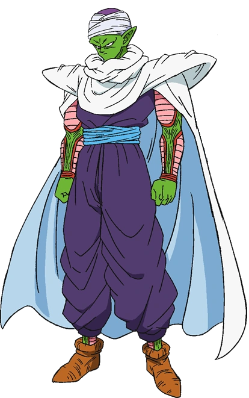
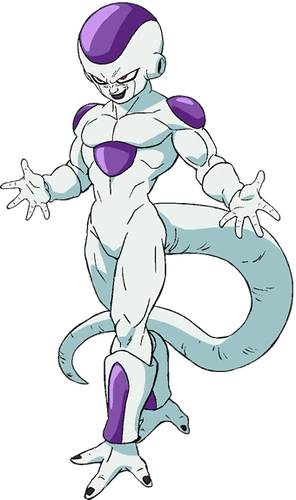

Guerrero Saiyan de corazón puro. Se distingue por su cabello negro puntiagudo que nunca cambia y su traje de artes marciales naranja.
Es amable, alegre y posee una obsesión insaciable por volverse más fuerte y enfrentar oponentes poderosos.
Vegeta
El orgulloso Príncipe de los Saiyan. Es más bajo que Goku (1.64 m) y tiene el cabello negro erizado hacia arriba.
Fue un villano cruel, frío y despiadado, pero con el tiempo se convirtió en un antihéroe protector, aunque mantiene su carácter arrogante y su rivalidad con Goku.
Piccolo

Un guerrero Namekiano de piel verde, gran altura (2.26 m) y orejas puntiagudas.
Originalmente nació para vengar a su padre y conquistar el mundo, pero su relación con Gohan lo transformó en un aliado sabio, serio y táctico.
Freezer

El tiránico "Emperador del Universo". En su forma final es pequeño, de color blanco con secciones púrpuras en la cabeza y hombros.
Es un sociópata extremadamente sádico, refinado en su lenguaje pero completamente despiadado y propenso a ataques de ira si es humillado.
Dodoria
Uno de los generales de élite de Freezer. Es un ser robusto, de piel rosada cubierta de protuberancias y ojos grandes.
Su personalidad es la de un matón brutal y cobarde que disfruta abusar de los más débiles pero entra en pánico cuando se ve superado.
Celula
Un bio-androide creado por el Dr. Gero con genes de los mejores guerreros.
Su apariencia evoluciona desde una forma de insecto humanoide hasta una forma "Perfecta" más humana y elegante. Es arrogante, calculador y comparte el deseo de pelea de los Saiyan y la frialdad de Freezer.
Krillin
El mejor amigo de Goku. Es un humano de baja estatura, calvo (durante la mayor parte de la serie) y con seis puntos tatuados en su frente.
Es leal, valiente a pesar de no tener el poder de un Saiyan, y suele ser el alivio cómico del grupo.
Trunks
Hijo de Vegeta y Bulma. Existen dos versiones principales: el del futuro, serio y precavido, y el del presente, más travieso y confiado.
Físicamente destaca por su cabello color lila (o azul en Super) y su estilo de pelea que a menudo incluye una espada.